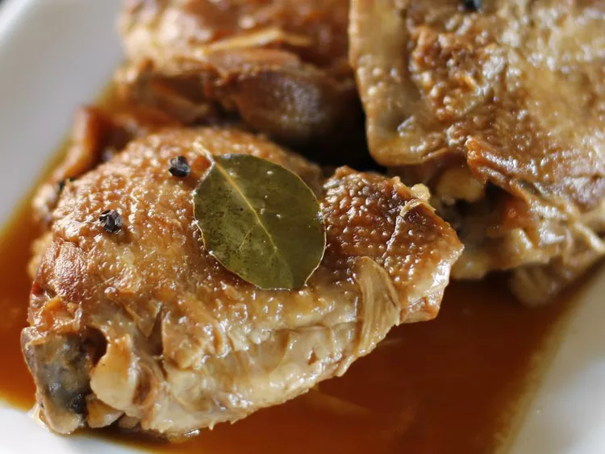

Chicken Adobo

Chicken Adobo is a type of Filipino chicken stew. Chicken pieces are marinated in soy sauce and spices, pan-fried, and stewed until tender.
Ingredients
- Chicken thighs
- White vinegar
- Soy sauce
- Garlic
- Black peppercorns
- Bay leaves
- Brown Sugar
Steps
- Marinate the chicken thighs in the adobo sauce for at least an hour, or as long as three hours. We put a cap on the marinade time because the white vinegar is super acidic, so it’ll start to mess with the texture of the chicken thighs after three hours.
- Brown the chicken thighs! They don’t need to be cooked through—focus on getting a nice golden-brown color and slightly crisp texture.
- Pour in the marinade and bring the chicken and sauce to a boil. Simmer until the sauce has reduced by half and the chicken is completely cooked through.
- Serve over white rice and sprinkle with fresh chopped scallions.